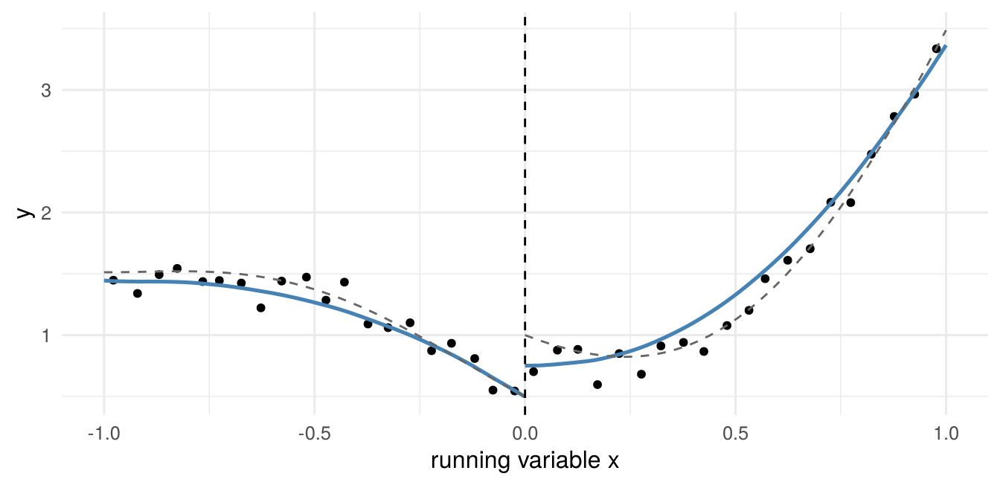

| estimator | ATE | ATT |
|---|---|---|
| Difference in means | -275.3 | |
| OLS with additive controls | -225.0 | |
| Regression adjustment | -231.4 | -225.0 |
| IPW, unnormalized | -331.1 | -298.5 |
| IPW, normalized | -231.7 | -225.7 |
| AIPW (doubly robust) | -231.1 | -229.1 |
| NN matching | -204.8 | -239.2 |
| NN matching, bias-corrected | -203.9 | -239.1 |
6 Causal Inference
\[ \newcommand{\bm}[1]{\boldsymbol{#1}} \newcommand{\btheta}{\boldsymbol{\theta}} \newcommand{\bbeta}{\boldsymbol{\beta}} \newcommand{\bgamma}{\boldsymbol{\gamma}} \newcommand{\bx}{\boldsymbol{x}} \newcommand{\by}{\boldsymbol{y}} \newcommand{\bX}{\boldsymbol{X}} \newcommand{\bR}{\boldsymbol{R}} \newcommand{\br}{\boldsymbol{r}} \newcommand{\bh}{\boldsymbol{h}} \newcommand{\bz}{\boldsymbol{z}} \newcommand{\bZ}{\boldsymbol{Z}} \newcommand{\bW}{\boldsymbol{W}} \newcommand{\bA}{\boldsymbol{A}} \newcommand{\bV}{\boldsymbol{V}} \newcommand{\bu}{\boldsymbol{u}} \newcommand{\bw}{\boldsymbol{w}} \newcommand{\bpsi}{\boldsymbol{\psi}} \newcommand{\balpha}{\boldsymbol{\alpha}} \newcommand{\bdelta}{\boldsymbol{\delta}} \newcommand{\bmu}{\boldsymbol{\mu}} \newcommand{\bg}{\boldsymbol{g}} \newcommand{\bS}{\boldsymbol{S}} \newcommand{\bD}{\boldsymbol{D}} \newcommand{\bI}{\boldsymbol{I}} \newcommand{\E}{\mathbb{E}} \newcommand{\Var}{\operatorname{Var}} \newcommand{\AVar}{\operatorname{Avar}} \newcommand{\cvp}{\xrightarrow{\;p\;}} \newcommand{\cvd}{\xrightarrow{\;d\;}} \newcommand{\iid}{\overset{\text{iid}}{\sim}} \newcommand{\KLIC}{\operatorname{KLIC}} \newcommand{\pd}[2]{\frac{\partial #1}{\partial #2}} \]
Optional reading
This chapter is optional and not part of the exam. It summarises the two causal inference lectures (Causal Inference I and II) for students who want a written reference. There is no problem set or computer tutorial for it; the short exercises at the end are for self-study.
Readings
Imbens and Wooldridge (2009); Angrist and Pischke (2009), Ch. 3, 4 and 6; Wooldridge (2010), Ch. 21; Imbens and Rubin (2015) for a book-length treatment. Instrumental variables and LATE: Imbens and Angrist (1994), Angrist, Imbens, and Rubin (1996), Abadie (2003), Słoczyński, Uysal, and Wooldridge (2025). Regression discontinuity: Imbens and Lemieux (2008), Lee and Lemieux (2010), Cattaneo, Idrobo, and Titiunik (2020).
Section 2.9.1 introduced potential outcomes, the average treatment effect and inverse probability weighting as the leading example of a two-step GMM estimator. This chapter places those results in the wider toolbox of program evaluation. It covers three identification strategies: selection on observables (randomized experiments, matching, weighting, regression and doubly robust estimators), instrumental variables with heterogeneous effects (the local average treatment effect), and regression discontinuity designs. The estimators reuse the tools of the course: logit for the propensity score (Chapter 1), two-step GMM for inference (Section 2.9), and local linear regression at a boundary (Section 4.3).
6.1 Potential outcomes and causal parameters
The notation follows Section 2.9.1: \(D_i\in\{0,1\}\) is the treatment, \((Y_{0i},Y_{1i})\) are the potential outcomes, \(Y_i=D_iY_{1i}+(1-D_i)Y_{0i}\) is observed, and the no-interference assumption (SUTVA) is maintained. Besides the ATE we use the average effects on the treated and on the untreated, \[ \tau=\E[Y_{1i}-Y_{0i}],\quad \tau_T=\E[Y_{1i}-Y_{0i}\mid D_i=1],\quad \tau_U=\E[Y_{1i}-Y_{0i}\mid D_i=0], \] which are linked by \(\tau=\pi\tau_T+(1-\pi)\tau_U\) with \(\pi=P(D_i=1)\). The three differ whenever effects are heterogeneous and units select into treatment on the basis of their gains.
What the naive comparison estimates. Let \(\Delta=\E[Y_i\mid D_i=1]-\E[Y_i\mid D_i=0]=\E[Y_{1i}\mid D_i=1]-\E[Y_{0i}\mid D_i=0]\). Adding and subtracting terms gives three equivalent decompositions, \[ \begin{aligned} \Delta&=\tau_T+\big(\E[Y_{0i}\mid D_i=1]-\E[Y_{0i}\mid D_i=0]\big)\\ &=\tau+\big(\E[Y_{0i}\mid D_i=1]-\E[Y_{0i}\mid D_i=0]\big)\\ &\qquad+(1-\pi)(\tau_T-\tau_U)\\ &=\pi\tau_T+(1-\pi)\tau_U\\ &\qquad+(1-\pi)\big(\E[Y_{1i}\mid D_i=1]-\E[Y_{1i}\mid D_i=0]\big)\\ &\qquad+\pi\big(\E[Y_{0i}\mid D_i=1]-\E[Y_{0i}\mid D_i=0]\big). \end{aligned} \tag{6.1}\] The first equality is the familiar one from Section 2.9.1; the term in brackets is the selection bias. The second shows that, relative to the ATE, there are two sources of bias: different baseline outcomes, and different gains (\(\tau_T\neq\tau_U\)). The third (Exercise 6.1) writes \(\Delta\) as the ATE plus a weighted sum of the differences between treated and untreated in both potential outcomes; it shows that \(\Delta=\tau\) if the treated and untreated have the same mean of \(Y_0\) and the same mean of \(Y_1\), which is weaker than full independence.
6.2 Randomized experiments
If \(D_i\) is randomly assigned, \((Y_{0i},Y_{1i})\perp D_i\), so \(\E[Y_{di}\mid D_i=1]=\E[Y_{di}\mid D_i=0]\) for \(d=0,1\). Both bias terms in Equation 6.1 vanish and \(\Delta=\tau=\tau_T=\tau_U\). The difference in sample means \(\bar Y_1-\bar Y_0\) is unbiased for \(\tau\). It is algebraically identical to the OLS slope in the regression of \(Y_i\) on a constant and \(D_i\), so a regression is just a convenient way to compute it. Two points matter for inference. First, with heterogeneous effects the variances of \(Y\) differ between the arms, so heteroskedasticity-robust standard errors should be used; the conventional OLS standard error is valid only if the two arms have equal variances or equal sizes. Second, adding pre-treatment covariates \(\bx_i\) does not change what is estimated (they are independent of \(D_i\)) but can reduce the variance. With heterogeneous effects, the regression should include \(D_i\) interacted with the demeaned covariates, \(Y_i\) on \((1,D_i,\bx_i-\bar\bx,D_i(\bx_i-\bar\bx))\), for the coefficient on \(D_i\) to be consistent for \(\tau\) and, in large samples, never less precise than the simple difference in means.
6.3 Selection on observables
Without randomization we rely on the two assumptions of Section 2.9.1:
- Unconfoundedness (conditional independence, CIA): \((Y_{0i},Y_{1i})\perp D_i\mid\bx_i\).
- Overlap (common support): \(0<p(\bx)<1\) for all \(\bx\), with \(p(\bx)=P(D_i=1\mid\bx_i=\bx)\).
For \(\tau_T\) it suffices that \(Y_{0i}\perp D_i\mid\bx_i\) and \(p(\bx)<1\). Under the CIA, \(\mu_d(\bx)\equiv\E[Y_i\mid D_i=d,\bx_i=\bx]=\E[Y_{di}\mid\bx_i=\bx]\), so the conditional effect \(\tau(\bx)=\mu_1(\bx)-\mu_0(\bx)\) is identified wherever there is overlap, and \[ \tau=\E[\mu_1(\bx_i)-\mu_0(\bx_i)],\qquad \tau_T=\E[\mu_1(\bx_i)-\mu_0(\bx_i)\mid D_i=1]. \tag{6.2}\] All estimators below are different ways of estimating these averages. They differ in what they model: the outcome regressions \(\mu_d\) (regression adjustment), the propensity score \(p\) (weighting, propensity score matching), both (doubly robust), or neither (covariate matching).
6.3.1 Subclassification and matching
Subclassification. If \(\bx_i\) takes \(K\) values \(\bx^1,\ldots,\bx^K\), Equation 6.2 is a weighted average of within-cell differences in means, \[ \hat\tau=\sum_{k=1}^K\big(\bar Y_{1k}-\bar Y_{0k}\big)\frac{N_k}{N},\qquad \hat\tau_T=\sum_{k=1}^K\big(\bar Y_{1k}-\bar Y_{0k}\big)\frac{N_{1k}}{N_1}, \] where \(N_k\) and \(N_{1k}\) are the numbers of units and of treated units in cell \(k\). Overlap requires every cell (for \(\tau_T\), every cell with treated units) to contain controls. With several or continuous covariates the cells become empty quickly: the curse of dimensionality of Section 4.3.4 in another guise.
Matching replaces exact cells by nearest neighbours. Let \(\mathcal J_M(i)\) be the set of the \(M\) units in the opposite group closest to unit \(i\) in covariate space. The missing potential outcome is imputed by the average outcome of the matches, \[ \hat Y_{0i}=\begin{cases}Y_i&D_i=0\\ M^{-1}\sum_{j\in\mathcal J_M(i)}Y_j&D_i=1\end{cases},\qquad \hat Y_{1i}=\begin{cases}M^{-1}\sum_{j\in\mathcal J_M(i)}Y_j&D_i=0\\ Y_i&D_i=1\end{cases}, \] so the treated are imputed \(Y_0\) from untreated matches and the untreated are imputed \(Y_1\) from treated matches. Then \(\hat\tau=N^{-1}\sum_i(\hat Y_{1i}-\hat Y_{0i})\) and \(\hat\tau_T=N_1^{-1}\sum_{i:D_i=1}(Y_i-\hat Y_{0i})\). Matching is usually done with replacement (a control can serve as a match several times), which reduces bias at the cost of variance.
Distance. Covariates on different scales are combined with a weighting matrix, \(\|\bx_i-\bx_j\|_{\bm V}=\{(\bx_i-\bx_j)'\bm V(\bx_i-\bx_j)\}^{1/2}\). The normalized Euclidean distance uses \(\bm V=\operatorname{diag}(\hat\sigma_1^{-2},\ldots,\hat\sigma_k^{-2})\), i.e. \(\sum_l(x_{li}-x_{lj})^2/\hat\sigma_l^2\) under the root, and is invariant to rescaling each covariate. The Mahalanobis distance uses \(\bm V=\hat{\boldsymbol\Sigma}_x^{-1}\) and also accounts for correlation between covariates.
Bias. When matches are not exact, \(\hat\tau_T\) contains the term \(N_1^{-1}\sum_{i:D_i=1}M^{-1}\sum_{j\in\mathcal J_M(i)}\{\mu_0(\bx_i)-\mu_0(\bx_j)\}\). Abadie and Imbens (2006) show that this conditional bias is of order \(N^{-1/k}\) with \(k\) continuous covariates. For \(k\ge2\) it is not negligible relative to the standard error, which is of order \(N^{-1/2}\), and for \(k\ge3\) it dominates the distribution of the estimator. The bias-corrected matching estimator (Abadie and Imbens 2011) estimates \(\mu_0\) (and \(\mu_1\)) by a regression and subtracts \(\hat\mu_0(\bx_i)-\hat\mu_0(\bx_j)\) from each matched difference. The standard bootstrap is not valid for matching with a fixed number of matches (Abadie and Imbens 2008); analytic variance formulas are available in Abadie and Imbens (2006).
6.3.2 The propensity score
Rosenbaum and Rubin (1983) showed that the propensity score is a balancing score: \(D_i\perp\bx_i\mid p(\bx_i)\), and if the CIA holds given \(\bx_i\) it also holds given \(p(\bx_i)\) alone, \[ (Y_{0i},Y_{1i})\perp D_i\mid\bx_i\quad\Longrightarrow\quad(Y_{0i},Y_{1i})\perp D_i\mid p(\bx_i) \] (Exercise 6.2). Matching or subclassifying on the scalar \(p(\bx_i)\) therefore removes the dimensionality problem of covariate matching, at the cost of having to model \(p\), in practice by a logit or probit with a flexible specification. Common implementations are nearest-neighbour matching on \(\hat p\) (optionally within a caliper \(|\hat p_i-\hat p_j|<\delta\)), radius matching, stratification on \(\hat p\), and kernel or local linear matching, which use a weighted average of all controls with weights that decline with \(|\hat p_i-\hat p_j|\). Estimating \(p\) affects the variance of the matching estimator, and treating \(\hat p\) as known is not valid (Abadie and Imbens 2016).
Overlap in practice. Plotting the distribution of \(\hat p\) for treated and controls shows whether overlap is plausible. If some treated units have \(\hat p\) above the largest control value, they have no comparable controls. A common response is to drop them (and report that the estimand now refers to the treated on the common support, so averages are over the treated units remaining after trimming) or to trim units with \(\hat p\notin[\alpha,1-\alpha]\), e.g. \(\alpha=0.1\), which changes the estimand to the ATE for the trimmed population.
Balance. Because \(p\) is only a device to balance \(\bx\), the specification is judged by whether the weighted or matched samples are balanced, e.g. by standardized differences in covariate means, not by the fit of the logit.
6.3.3 Weighting
The IPW identification result and the unnormalized and normalized ATE estimators are in Section 2.9.1 (Equation 2.1). For the ATT only \(Y_0\) of the treated is missing, and controls are reweighted to look like the treated: \[ \tau_T=\frac{1}{\pi}\E\Big[\frac{D_i-p(\bx_i)}{1-p(\bx_i)}Y_i\Big], \] \[ \hat\tau_{T,norm}=\frac{\sum_iD_iY_i}{\sum_iD_i}-\frac{\sum_i(1-D_i)\omega_iY_i}{\sum_i(1-D_i)\omega_i},\quad \omega_i=\frac{\hat p(\bx_i)}{1-\hat p(\bx_i)} . \] Controls with a high propensity score, those that look like treated units, receive large weights (the odds of treatment). Problem Set 2, Problem 4 derives the moments and the two-step variance. As stressed in Section 2.9.1, the normalized versions, whose weights sum to one within each group, are preferred (Busso, DiNardo, and McCrary 2014). One reason is a simple invariance property discussed in Section 6.4.1: an unnormalized estimator changes if a constant is added to \(Y\).
6.3.4 Regression adjustment and what OLS estimates
Regression adjustment (RA) estimates \(\mu_0\) and \(\mu_1\) by separate regressions in the control and treated samples, predicts both for every unit and averages according to Equation 6.2: \[ \hat\tau_{RA}=\frac1N\sum_{i=1}^N\big(\hat\mu_1(\bx_i)-\hat\mu_0(\bx_i)\big),\qquad \hat\tau_{T,RA}=\frac1{N_1}\sum_{i:D_i=1}\big(\hat\mu_1(\bx_i)-\hat\mu_0(\bx_i)\big). \] With linear \(\hat\mu_d\) this is the same as the fully interacted regression of Section 6.2.
OLS with additive controls. Most applied work instead runs \(Y_i=\alpha+\tau D_i+\bx_i'\bbeta+u_i\). What does \(\tau\) estimate when effects are heterogeneous?
Saturated controls. If \(\bx_i\) is discrete and the regression includes a dummy for each cell, the OLS coefficient converges to \[ \tau_{OLS}=\sum_{k=1}^K\tau(\bx^k)\,w_k,\qquad w_k=\frac{p_k(1-p_k)P(\bx_i=\bx^k)}{\sum_{l=1}^Kp_l(1-p_l)P(\bx_i=\bx^l)},\quad p_k=p(\bx^k). \] The ATE weights the cells by \(P(\bx_i=\bx^k)\) and the ATT by \(p_kP(\bx_i=\bx^k)/\pi\). OLS instead weights by the conditional variance of treatment, \(p_k(1-p_k)\): cells where treated and controls are balanced (\(p_k\) near \(1/2\)) count most, cells where almost everyone or almost no one is treated count little. OLS is a variance-weighted average of cell effects, which coincides with the ATE only if \(\tau(\bx)\) is constant or uncorrelated with \(p(1-p)\).
Linear controls. Słoczyński (2022) shows that, for any \(\bx_i\), the OLS coefficient is exactly \[ \begin{gathered} \tau_{OLS}=w_1\,\tau_{T}^{\ell}+w_0\,\tau_{U}^{\ell},\qquad w_0=1-w_1,\\ w_1=\frac{(1-\pi)\Var[p^\ell(\bx_i)\mid D_i=0]}{\pi\Var[p^\ell(\bx_i)\mid D_i=1]+(1-\pi)\Var[p^\ell(\bx_i)\mid D_i=0]}, \end{gathered} \tag{6.3}\] where \(p^\ell(\bx_i)\) is the linear projection of \(D_i\) on \((1,\bx_i)\), and \(\tau_T^{\ell}\), \(\tau_U^{\ell}\) are the effects on the treated and untreated implied by separate linear regressions of \(Y\) on \(p^\ell(\bx_i)\) in each group. They equal \(\tau_T\) and \(\tau_U\) if \(\E[Y_{di}\mid\bx_i]\) is linear in \(p^\ell(\bx_i)\). If the two conditional variances are similar, \(w_1\approx1-\pi\): the smaller group gets the larger weight. When few units are treated, OLS is close to the ATT, not the ATE; when most are treated, it is close to the ATU. The ATE puts weight \(\pi\) on \(\tau_T\), so OLS can be far from the ATE when \(\pi\) is far from \(1/2\) and \(\tau_T\neq\tau_U\).
6.3.5 Doubly robust estimation
The augmented IPW (AIPW) estimator combines both models (Robins, Rotnitzky, and Zhao 1994): \[ \begin{aligned} \hat\tau_{AIPW}=\frac1N\sum_{i=1}^N\Big[&\hat\mu_1(\bx_i)-\hat\mu_0(\bx_i)\\ &+\frac{D_i\big(Y_i-\hat\mu_1(\bx_i)\big)}{\hat p(\bx_i)}-\frac{(1-D_i)\big(Y_i-\hat\mu_0(\bx_i)\big)}{1-\hat p(\bx_i)}\Big]. \end{aligned} \] It starts from RA and adds an IPW-weighted average of the residuals. If the outcome models are correct, the residual terms have mean zero; if the propensity score is correct, they remove the bias of misspecified outcome models. AIPW is therefore consistent if either model is correctly specified (double robustness), and it reaches the semiparametric efficiency bound when both are. The closely related IPWRA estimator runs the RA regressions weighted by \(1/\hat p\) (treated) and \(1/(1-\hat p)\) (controls) and has the same double robustness. The AIPW moment is also Neyman orthogonal, which is why it is the basis of the DML estimator of the ATE (Section 5.5 discusses the partially linear version).
6.3.6 Illustration: smoking and birth weight
We return to the data of Computer Tutorial 2 (Cattaneo 2010): the effect of smoking during pregnancy (mbsmoke) on birth weight in grams, with controls for marital status, age (and its square), education and first birth. The propensity score is a logit, the outcome models are linear, and covariate matching uses one nearest neighbour with the Mahalanobis distance (without the squared age).
The raw difference of about \(-275\) g overstates the harm of smoking, because smokers are less often married and less educated. All estimators that model the outcome or the normalized propensity score agree on an ATE of about \(-230\) g and an ATT of about \(-225\) g (Table 6.1). Two results stand out. First, the unnormalized IPW estimate of the ATE is far off. Birth weights are around 3000 g, and the IPW weights \(D_i/\hat p_i\) average to one only in expectation, so a small imbalance in the weights is multiplied by a large outcome level; the normalized estimator removes this. The unnormalized IPW estimate of the ATT is off for the same reason. Second, OLS with additive controls is close to the ATT rather than the ATE. The Słoczyński decomposition Equation 6.3 gives \(w_1=0.79\), \(\tau_T^\ell=-224.9\), \(\tau_U^\ell=-225.1\), so \(w_1\tau_T^\ell+w_0\tau_U^\ell=-225.0\), which reproduces the OLS coefficient exactly. With only 19% smokers, OLS puts about 80% of its weight on the effect for smokers. Here \(\tau_T\) and \(\tau_U\) happen to be close, so the distinction is minor; in applications with more heterogeneity it is not. Matching gives a smaller ATE and a larger ATT than the regression-based estimators. Since all matching covariates are discrete, about 90% of smokers and 72% of non-smokers have an exact match, so the bias correction changes almost nothing. The difference reflects that matching does not impose linear outcome models, together with its larger sampling variance; it is a reminder that estimates under the same identifying assumption can differ by more than rounding.
6.4 Instrumental variables and the LATE
When unconfoundedness is implausible, an instrument can identify a causal effect, but with heterogeneous effects not the ATE. Let \(Z_i\in\{0,1\}\) be a binary instrument (an offer, an eligibility rule, a lottery) and \(D_i\) the treatment actually taken. Each unit has two potential treatments \(D_{0i},D_{1i}\), the treatment it would take with \(Z_i=0\) and \(Z_i=1\), so \(D_i=Z_iD_{1i}+(1-Z_i)D_{0i}\), and potential outcomes \(Y_i(d,z)\).
The pair \((D_{0i},D_{1i})\) defines four types:
| \(D_{1i}=0\) | \(D_{1i}=1\) | |
|---|---|---|
| \(D_{0i}=0\) | never-taker | complier |
| \(D_{0i}=1\) | defier | always-taker |
Types are not observed: a unit with \(Z_i=1,D_i=1\) is a complier or an always-taker. Imbens and Angrist (1994) and Angrist, Imbens, and Rubin (1996) impose:
- Independence: \(\{Y_i(d,z),D_{0i},D_{1i}\}\perp Z_i\) (the instrument is as good as randomly assigned).
- Exclusion: \(Y_i(d,0)=Y_i(d,1)\equiv Y_{di}\) (the instrument affects \(Y\) only through \(D\)).
- First stage: \(\E[D_i\mid Z_i=1]\neq\E[D_i\mid Z_i=0]\).
- Monotonicity: \(D_{1i}\ge D_{0i}\) for all \(i\) (no defiers).
Theorem 6.1 (LATE theorem) Under assumptions 1–4, the Wald estimand equals the average effect for compliers: \[ \frac{\E[Y_i\mid Z_i=1]-\E[Y_i\mid Z_i=0]}{\E[D_i\mid Z_i=1]-\E[D_i\mid Z_i=0]}=\E[Y_{1i}-Y_{0i}\mid D_{1i}>D_{0i}]\equiv\tau_{LATE}, \] and the denominator is the share of compliers, \(P(D_{1i}>D_{0i})\).
The proof is Exercise 6.3. The numerator is the intention-to-treat effect: always- and never-takers contribute nothing to it, because \(Z\) does not change their treatment. With a binary instrument and no covariates, the Wald ratio is also the IV and 2SLS estimator. Compliers are the units whose treatment is changed by this instrument, so different instruments identify different LATEs, and \(\tau_{LATE}\) can differ substantially from \(\tau\) and \(\tau_T\). The size and characteristics of the complier population are identified even though compliers cannot be individually identified: for example, \(P(D_{1i}=D_{0i}=1)=\E[D_i\mid Z_i=0]\) is the share of always-takers.
6.4.1 Covariates and kappa weighting
Often the instrument is only as good as random conditional on covariates, \(\{Y_i(d,z),D_{0i},D_{1i}\}\perp Z_i\mid\bx_i\), with instrument propensity score \(q(\bx)=P(Z_i=1\mid\bx_i=\bx)\in(0,1)\). The common practice of adding \(\bx_i\) linearly to 2SLS does not in general estimate the LATE when effects vary with \(\bx\); Angrist and Imbens (1995) show that even a saturated specification yields a weighted average of covariate-specific LATEs with weights that differ from the complier shares. Weighting estimators avoid this.
Abadie’s kappa (Abadie 2003). Define \[ \begin{aligned} \kappa_i&=1-\frac{D_i(1-Z_i)}{1-q(\bx_i)}-\frac{(1-D_i)Z_i}{q(\bx_i)},\\ \kappa_{1i}&=D_i\frac{Z_i-q(\bx_i)}{q(\bx_i)(1-q(\bx_i))},\qquad \kappa_{0i}=(1-D_i)\frac{q(\bx_i)-Z_i}{q(\bx_i)(1-q(\bx_i))}. \end{aligned} \] For any function \(g\), \[ \begin{aligned} \E[g(Y_i,D_i,\bx_i)\mid D_{1i}>D_{0i}]&=\frac{\E[\kappa_ig(Y_i,D_i,\bx_i)]}{P(D_{1i}>D_{0i})},\\ \E[g(Y_{1i},\bx_i)\mid D_{1i}>D_{0i}]&=\frac{\E[\kappa_{1i}g(Y_i,\bx_i)]}{P(D_{1i}>D_{0i})}, \end{aligned} \] and the same with \(Y_{0i}\) and \(\kappa_{0i}\). Intuitively, \(\kappa_i\) removes the always-takers (observed with \(D=1,Z=0\)) and never-takers (observed with \(D=0,Z=1\)) by giving the corresponding cells negative weight. With \(g=1\), \(\E[\kappa_i]=\E[\kappa_{1i}]=\E[\kappa_{0i}]=P(D_{1i}>D_{0i})\). Taking \(g(\bx_i)=\bx_i\) gives the mean characteristics of compliers, \(\E[\bx_i\mid D_{1i}>D_{0i}]=\E[\kappa_i\bx_i]/\E[\kappa_i]\), which helps to interpret a LATE.
Weighting estimators of the LATE. Since \(\kappa_{1i}-\kappa_{0i}=(Z_i-q_i)/\{q_i(1-q_i)\}\) with \(q_i=q(\bx_i)\), \[ \tau_{LATE}=\frac{\E[(\kappa_{1i}-\kappa_{0i})Y_i]}{P(D_{1i}>D_{0i})}, \] and each of the three sample estimators of \(P(D_{1i}>D_{0i})\), the sample means of \(\hat\kappa_i\), \(\hat\kappa_{1i}\) and \(\hat\kappa_{0i}\), gives an estimator: \(\hat\tau_a\), \(\hat\tau_{a,1}\) and \(\hat\tau_{a,0}\). The estimator \(\hat\tau_{a,1}\) is identical to the ratio of two unnormalized IPW estimators, the effects of \(Z\) on \(Y\) and on \(D\) (Tan 2006), which is the most popular weighting estimator of the LATE.
Słoczyński, Uysal, and Wooldridge (2025) show that none of these is normalized: written as a difference between a weighted mean of \(Y\) for compliers under treatment and under control, the weights do not sum to one. As a consequence they are not translation invariant: adding a constant \(c\) to every \(Y_i\) changes the estimate (Exercise 6.4). They recommend two normalized estimators, \[ \hat\tau_{a,10}=\frac{\sum_i\hat\kappa_{1i}Y_i}{\sum_i\hat\kappa_{1i}}-\frac{\sum_i\hat\kappa_{0i}Y_i}{\sum_i\hat\kappa_{0i}}, \] \[ \hat\tau_u=\frac{\hat\E_{w}[Y\mid Z=1]-\hat\E_{w}[Y\mid Z=0]}{\hat\E_{w}[D\mid Z=1]-\hat\E_{w}[D\mid Z=0]}, \] where \(\hat\E_w[V\mid Z=1]=\sum_iZ_iV_i/\hat q_i\big/\sum_iZ_i/\hat q_i\) and \(\hat\E_w[V\mid Z=0]=\sum_i(1-Z_i)V_i/(1-\hat q_i)\big/\sum_i(1-Z_i)/(1-\hat q_i)\) are normalized IPW means. \(\hat\tau_u\) is the ratio of two normalized IPW estimators of the effects of \(Z\) on \(Y\) and on \(D\). Both are translation invariant and scale equivariant; the authors recommend \(\hat\tau_u\). The same lesson as for the ATE applies: normalize the weights.
| estimator | bias | sd | sd if Y + 10 | change if Y + 100 |
|---|---|---|---|---|
| 2SLS with linear control | -0.091 | 0.229 | 0.229 | 0.000 |
| \(\hat\tau_a\) | 0.012 | 0.257 | 0.449 | 6.746 |
| \(\hat\tau_{a,1}\) (Tan) | 0.011 | 0.255 | 0.441 | 6.552 |
| \(\hat\tau_{a,0}\) | 0.016 | 0.265 | 0.464 | 7.011 |
| \(\hat\tau_{a,10}\) (normalized) | 0.007 | 0.243 | 0.243 | 0.000 |
| \(\hat\tau_u\) (normalized) | 0.005 | 0.242 | 0.242 | 0.000 |
In this design 2SLS with \(x\) as a linear control is biased for the LATE, because the complier effect varies with \(x\), 2SLS weights the covariate-specific effects differently from the complier distribution, and the linear control only approximates the role of \(x\). All kappa estimators are close to unbiased. The unnormalized ones are only slightly less precise in the original design, but their precision depends on the arbitrary level of \(Y\): after adding 10 to the outcome their standard deviation rises by about 75%, and adding 100 moves the estimate in a single sample by several units. The normalized estimators (and 2SLS) are unaffected (Table 6.2).
6.5 Regression discontinuity designs
In a regression discontinuity (RD) design, treatment is determined, fully or partly, by whether a running variable (score) \(X_i\) exceeds a known cutoff \(c\). Examples are test-score thresholds for scholarships, age or income limits for programs, and vote-share thresholds in elections. The idea is that units just above and just below the cutoff are comparable, so the jump in the outcome at \(c\) reveals the effect of treatment, at least for units at the cutoff. We discuss the continuity-based framework; the alternative local randomization framework treats units in a small window around \(c\) as if randomly assigned (Cattaneo, Idrobo, and Titiunik 2020).
6.5.2 Estimation by local polynomials
The RD estimand is a difference of two regression functions evaluated at a boundary point: \(c\) is the left boundary of the treated sample and the right boundary of the control sample. This is exactly the situation of Table 4.3, where Nadaraya–Watson has a bias of order \(h\) and local linear regression a bias of order \(h^2\). The standard estimator is therefore local linear regression on each side, with a kernel \(K\) and bandwidth \(h\): \[ (\hat\alpha_+,\hat\beta_+)=\arg\min_{a,b}\sum_{i:X_i\ge c}K\Big(\frac{X_i-c}{h}\Big)\big(Y_i-a-b(X_i-c)\big)^2, \] \((\hat\alpha_-,\hat\beta_-)\) analogously for \(X_i<c\), and \(\hat\tau_{SRD}=\hat\alpha_+-\hat\alpha_-\). Practical recommendations (Cattaneo, Idrobo, and Titiunik 2020):
- Order: \(p=1\) (or \(p=2\)). Global high-order polynomials (fitting e.g. a quartic in \(X\) to the whole sample) give the boundary points erratic weights and are not recommended.
- Kernel: the triangular kernel \(K(u)=(1-|u|)\mathbb 1\{|u|\le1\}\) is optimal for boundary estimation; the uniform kernel amounts to OLS of \(Y\) on \((1,T_i,X_i-c,T_i(X_i-c))\) within \([c-h,c+h]\) (Exercise 6.5). Results are usually not sensitive to the kernel.
- Bandwidth: the bias-variance trade-off of Section 4.3 applies. The standard choice minimizes the asymptotic MSE of \(\hat\tau_{SRD}\), possibly with different bandwidths on the two sides.
- Inference: the MSE-optimal bandwidth is too large for conventional confidence intervals, whose centre is then off by a bias of the same order as the standard error (as for the density bands of Section 4.2). Robust bias-corrected intervals (Calonico, Cattaneo, and Titiunik 2014) subtract an estimate of the bias and inflate the standard error to account for estimating it. They are implemented, with the bandwidth selectors, in the R and Stata packages
rdrobust(which includesrdplot) andrddensity. - Covariates: pre-determined covariates can be added linearly to the local regression. They should not change the estimate, but they can reduce the variance. Covariates affected by treatment must not be included.
The fuzzy RD is estimated as the ratio of two such jumps, which is numerically the same as local 2SLS with \(T_i\) as instrument for \(D_i\).
RD plots. A scatter plot of \(Y\) against \(X\) is often uninformative. The standard RD plot shows means of \(Y\) in bins of \(X\) (evenly spaced or quantile-spaced) together with a smooth fit on each side, which displays the jump and the shape of the regression functions.

| estimator | bias | sd | rmse |
|---|---|---|---|
| local linear, h = 0.1 | 0.006 | 0.222 | 0.222 |
| local linear, h = 0.25 | -0.006 | 0.142 | 0.142 |
| local linear, h = 0.5 | -0.077 | 0.100 | 0.126 |
| local linear, h = 1 | -0.517 | 0.073 | 0.522 |
| global linear | -0.924 | 0.074 | 0.927 |
| global quartic | 0.001 | 0.162 | 0.161 |
Table 6.3 shows the bandwidth trade-off. A small bandwidth gives little bias but a large variance; a large one fits a straight line through a curved function and is badly biased; \(h=1\) uses all data on each side and is as bad as a global linear fit. Figure 6.1 shows the same bias in a single sample: on the right of the cutoff, where the regression function is strongly curved, the local linear fit with \(h=0.5\) starts below the true intercept. The global quartic happens to work reasonably here, because the true function is smooth on the whole support, but it is noisier than local linear regression with a moderate bandwidth.
6.5.3 Validation and falsification
The continuity assumptions are about unobserved potential outcomes and cannot be tested. Their implications can:
- Manipulation of the score. If units can precisely sort to one side of the cutoff (students retaking a test until they pass, officials adjusting a poverty index), units just above and below \(c\) are no longer comparable. Sorting usually shows up as a discontinuity in the density of \(X\) at \(c\), which is tested by comparing density estimates on both sides (McCrary 2008; Cattaneo, Jansson, and Ma 2020).
- Pre-determined covariates and placebo outcomes. Characteristics fixed before treatment should not jump at the cutoff. Running the RD estimator with each covariate as outcome is a balance test.
- Placebo cutoffs. Estimating “effects” at values of \(X\) where treatment does not change should give zero (using only treated or only control observations so that the true effect does not contaminate the estimate).
- Sensitivity. Results should be robust to the bandwidth and, as a donut-hole check, to dropping the observations closest to \(c\), which are the most likely to have manipulated their score.
Example. Meyersson (2014) studies whether the election of an Islamic party mayor in Turkish municipalities in 1994 affected the share of young women who completed high school by 2000. The score is the Islamic party’s margin of victory, with cutoff zero. The naive comparison of municipalities with Islamic and secular mayors suggests a negative association, because Islamic parties won in poorer and more conservative places. The local linear RD estimate (triangular kernel, MSE-optimal bandwidth of about 17 percentage points) is a positive effect of about 3 percentage points, with a robust bias-corrected p-value of about 0.08 (Cattaneo, Idrobo, and Titiunik 2020). The density test and the covariate balance tests do not indicate manipulation.
6.6 Further reading
Imbens and Rubin (2015) is the standard reference for the potential outcomes framework; Angrist and Pischke (2009) is an accessible applied treatment of all three strategies. For matching and weighting see Imbens and Wooldridge (2009) and Busso, DiNardo, and McCrary (2014), for LATE and kappa weighting Abadie (2003) and Słoczyński, Uysal, and Wooldridge (2025), and for RD Cattaneo, Idrobo, and Titiunik (2020) and Lee and Lemieux (2010). Difference-in-differences, the fourth main design, is not covered in this course.
6.7 Exercises
These exercises are optional and for self-study.
Exercise 6.1 (Decomposing the naive comparison)
- Show that \(\Delta=\tau+\big(\E[Y_{0i}\mid D_i=1]-\E[Y_{0i}\mid D_i=0]\big)+(1-\pi)(\tau_T-\tau_U)\).
- Verify the third equality in Equation 6.1.
- Suppose \(\E[Y_{0i}\mid D_i=1]=\E[Y_{0i}\mid D_i=0]\) but individuals with larger gains select into treatment. Which of \(\tau\), \(\tau_T\) and \(\tau_U\) does \(\Delta\) equal?
Exercise 6.2 (The propensity score theorem) Let \(p(\bx)=P(D=1\mid\bx)\) with \(0<p(\bx)<1\). (a) Show that \(P(D=1\mid\bx,p(\bx))=P(D=1\mid p(\bx))\), i.e. \(D\perp\bx\mid p(\bx)\). (b) Show that if \((Y_0,Y_1)\perp D\mid\bx\), then \((Y_0,Y_1)\perp D\mid p(\bx)\).
Exercise 6.3 (The LATE theorem) Prove Theorem 6.1. Hint: write \(Y_i=Y_{0i}+D_i(Y_{1i}-Y_{0i})\) and use independence to express \(\E[Y_i\mid Z_i=1]-\E[Y_i\mid Z_i=0]\) in terms of \(D_{1i}-D_{0i}\).
Exercise 6.4 (Normalization and translation invariance)
- Show that \(\hat\tau_{a,1}\) equals the ratio of the unnormalized IPW estimators of the effect of \(Z\) on \(Y\) and of \(Z\) on \(D\), \(\sum_i(Z_i/\hat q_i-(1-Z_i)/(1-\hat q_i))Y_i\big/\sum_i(Z_i/\hat q_i-(1-Z_i)/(1-\hat q_i))D_i\).
- Show that replacing \(Y_i\) by \(Y_i+c\) changes \(\hat\tau_a\) by \(c\sum_i(\hat\kappa_{1i}-\hat\kappa_{0i})\big/\sum_i\hat\kappa_i\) and explain why this is generally non-zero in finite samples but zero in expectation.
- Show that \(\hat\tau_{a,10}\) and \(\hat\tau_u\) are translation invariant.
Exercise 6.5 (RD as a regression)
- Show that the sharp RD local linear estimator with the uniform kernel equals the OLS coefficient on \(T_i\) in the regression of \(Y_i\) on \((1,T_i,X_i-c,T_i(X_i-c))\) using observations with \(|X_i-c|\le h\).
- In a fuzzy design, show that the ratio of the two local linear jumps (in \(Y\) and in \(D\)), with the same kernel and bandwidth, equals the IV estimator of the coefficient on \(D_i\) in \(Y_i=\alpha+\tau D_i+\beta_-(X_i-c)+\beta_+T_i(X_i-c)+u_i\) with instruments \((1,T_i,X_i-c,T_i(X_i-c))\), using the same window.
Exercise 6.6 (Computing: ATT estimators) Using cattaneo2.csv, estimate the effect of smoking on the treated by (i) regression adjustment, (ii) normalized IPW with logit propensity score, (iii) one-to-one nearest-neighbour matching on the estimated propensity score with replacement. Plot the distribution of \(\hat p\) for smokers and non-smokers and comment on overlap.